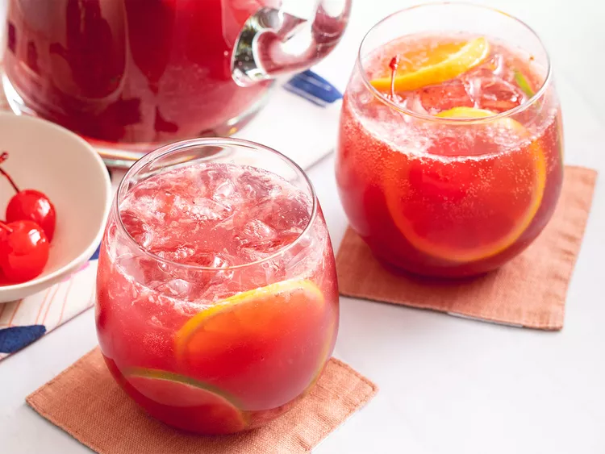

Sangria is an alcoholic punch that originated in Spain and Portugal. There are two common varieties: red sangria and white sangria. It's typically made with wine, liqueur, sparkling water, fruit juice, and lots of sliced fruit.
Ingredients
- Red Wine
- Brandy
- Triple Sec
- Fruit Juice
- Sugar(Optional)
- Carbonated Water (Optional)
- Fruit
Steps
- Mix all the liquid Ingredients(except the carbonated water)
- Add sliced fruit
- Refrigerate overnight
- Add carbonated water
Return to Top
Return to Index